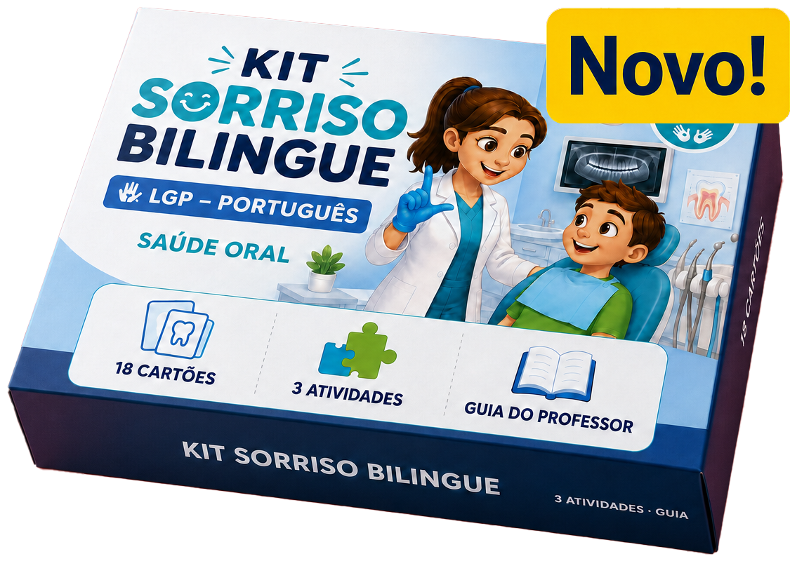
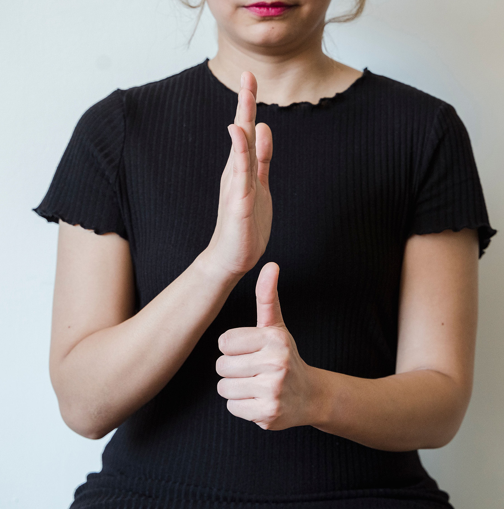
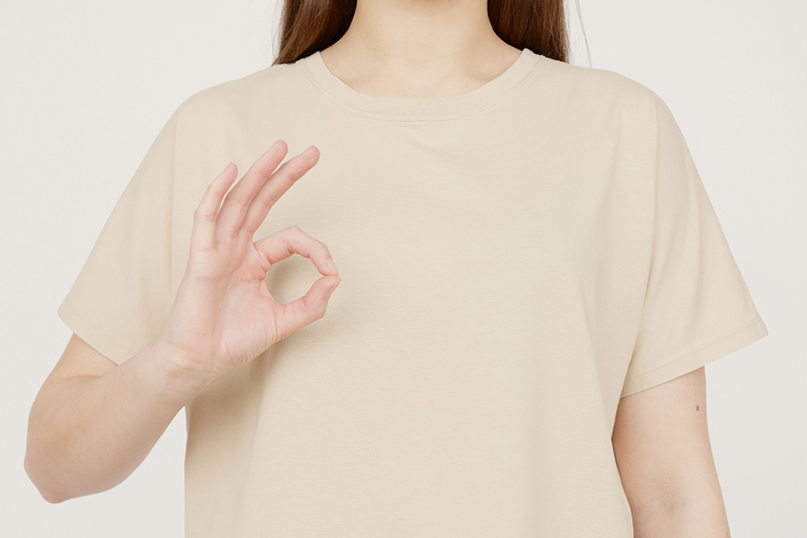
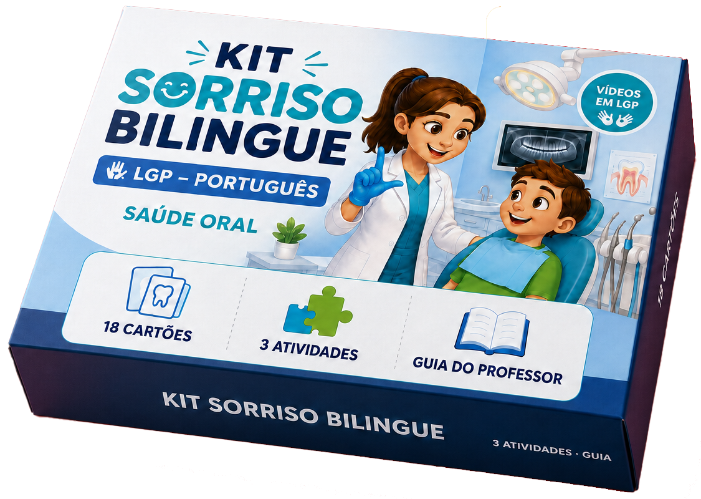

Ligamos a Língua Gestual Portuguesa à Medicina Dentária
A DentLGP desenvolve recursos educativos bilingues e multimodais que combinam Língua Gestual Portuguesa, português escrito, imagem, vídeo e atividades interativas.



A Nossa Missão
Desenvolver recursos educativos bilingues e multimodais que facilitem a aprendizagem e promovam a educação para a saúde oral junto das crianças Surdas.
Criamos pontes entre comunicação, educação e saúde oral
A DentLGP é um projeto educativo que nasceu com o objetivo de aproximar a Língua Gestual Portuguesa da educação para a saúde oral e da Medicina Dentária. O seu desenvolvimento parte da necessidade de tornar a informação sobre saúde oral mais clara, visual, acessível e adequada aos alunos Surdos.
Ao integrar o vocabulário em LGP, o português escrito, imagens ilustrativas e atividades pedagógicas, o projeto procura promover a autonomia, a prevenção e a literacia em saúde oral.
Valores e Visão
- Respeito pela LGP
- Acessibilidade linguística
- Educação bilingue
- Clareza visual
- Rigor pedagógico
- Aprendizagem participativa
- Articulação educação/saúde
O que torna a DentLGP diferente?
Combinamos estratégias visuais e bilingues para aproximar a Língua Gestual Portuguesa da educação para a saúde oral, promovendo a acessibilidade e o rigor pedagógico.
Conhecer o nosso projetoConteúdo bilingue
Articulação pedagógica entre Língua Gestual Portuguesa e português escrito.
Aprendizagem multimodal
Uso de imagem, texto, vídeo em LGP e componentes lúdicos no mesmo material.
Recursos físicos e digitais
Integração entre cartões físicos e atividades interativas online.
Contextos reais de saúde oral
Organização em temas práticos da clínica, estruturas da boca e higiene diária.
Kit Sorriso Bilingue
O 1.º projeto
da DentLGP: um recurso pedagógico bilingue dedicado à
Medicina
Dentária e à Saúde Oral, pensado especialmente para alunos Surdos do 1.º Ciclo.
Kit físico de aprendizagem
Caixa ilustrada com 81 cartões combinando ilustrações apelativas, vocabulário em LGP acessível por QR Code, frases contextualizadas, atividades e materiais pedagógicos de apoio para exploração em sala de aula ou em família.

Jogo online do Kit Sorriso Bilingue
Plataforma interativa online com 3 temas principais, 18 conceitos de saúde oral, 5 atividades lúdicas digitais, vídeos em LGP e desafios de associação e memória.

Como funciona a aprendizagem
O Kit Sorriso Bilingue foi concetualizado para permitir uma exploração flexível e articulada entre diferentes canais de comunicação.

Observar a imagem
A criança explora a ilustração apelativa representativa do conceito de saúde oral no cartão ou no jogo digital.

Ler em português
Acompanha a palavra e frases contextualizadas em português escrito para reforço de vocabulário e leitura.
Ver o vídeo em LGP
Acede à explicação em vídeo na Língua Gestual Portuguesa através do QR Code ou diretamente no jogo digital.
Aprender pelo jogo
Consolida os conhecimentos através das 5 atividades interativas digitais de associação e memória.
0
Conceitos de saúde oral
0
Atividades digitais online
0
Cartões do kit físico
O que fazemos na DentLGP?
Criamos recursos que aproximam a educação bilingue, a LGP e a saúde oral através de conteúdos educativos, design visual e tecnologia.
Recursos educativos bilingues
Desenvolvemos materiais que articulam Língua Gestual Portuguesa e português escrito, respeitando a função de cada língua na aprendizagem.
Vocabulário de Medicina Dentária
Organizamos conceitos relacionados com profissionais, espaços, instrumentos, estruturas da boca, tratamentos e cuidados de higiene oral.
Vídeos em LGP
Integramos vídeos em Língua Gestual Portuguesa nos recursos físicos e digitais, permitindo o acesso visual aos conceitos apresentados.
Cartões e materiais físicos
Criamos cartões ilustrados, frases contextualizadas, atividades de compreensão e materiais de apoio para utilização educativa.
Jogos educativos digitais
Transformamos conteúdos de saúde oral em atividades digitais de associação, escolha, memória e exploração interativa.
Apoio à utilização pedagógica
Organizamos os materiais de forma a facilitar a sua utilização por docentes, educadores, famílias e outros profissionais que acompanham crianças Surdas.
Recursos pensados para diferentes contextos
Os materiais da DentLGP podem apoiar a aprendizagem, a comunicação e a educação para a saúde oral em diferentes ambientes.
Alunos Surdos
Recursos visuais e bilingues pensados especialmente para alunos Surdos do 1.º Ciclo, respeitando a importância da LGP no acesso à informação.
Docentes e educadores
Materiais que podem ser utilizados na exploração de vocabulário, leitura, compreensão, educação para a saúde e atividades bilingues.
Famílias
Recursos que ajudam as famílias a conversar sobre higiene oral, consultas, prevenção e cuidados diários de forma acessível e lúdica.
Profissionais de saúde oral
Materiais que podem apoiar a explicação de conceitos básicos e facilitar a preparação das crianças para o contacto com a clínica dentária.
Escolas e instituições
Recursos que podem integrar projetos educativos relacionados com saúde oral, Língua Gestual Portuguesa, português escrito e literacia visual.
Conheça melhor a
DentLGP
e o Kit Sorriso Bilingue
Encontre respostas às principais questões sobre o projeto educativo DentLGP, os seus objetivos e a utilização dos materiais.
- Conhecer a clínica;
- Estruturas da boca;
- Higiene oral e cuidados.